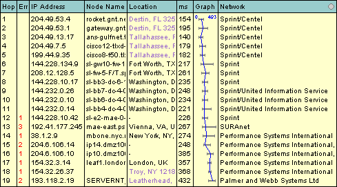
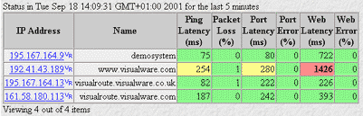

- visual -
Each is a robust, full-featured and high-performance compiler from the largest and most experienced Fortran team in the industry. The world's best-selling Fortran compiler for Windows, featuring Compaq Array Visualizer (Professional and Enterprise Editions. ) Get an update on the convergence of Compaq Visual Fortran and Intel Fortran for Windows. Compaq Visual Fortran - A Guide to Creating Windows Applications by Dr. This is the tutoirial text you've been waiting for.
 |
.Help evaluate a new question answering search engine. A synergistic opportunity exists in the application of visual programming methods to the realm of high-performance computing. Here, we highlight the motivations of high-performance computing, system characteristics, and design considerations for a new software programming paradigm. 1 Introduction For many end users in engineering and science, computing is a tool for problem formulation, analysis, and solution.
|  |
The experimental setup The simulation The target tracking experiment The profile following experiment References Page maintained by Jacques Gangloff - last modification 1999 Jun 10 . . At high sampling rate, an optimal control strategy for a visual loop should take into account the dynamics of the manipulator. We consider the robot as a virtual Cartesian motion device, i. a device that allows the control of each Cartesian coordinates (3 translations and 3 rotations) of a frame attached to the end effector.
The AVCATT-A's virtual training environment supports simulated interactive combat. . SGI to provide high-performance visual systems for U. Army AVCATT-A SGI to provide high-performance visual systems for U. Army AVCATT-A Mountain View 20 Apr 00 SGI will provide its advanced high-performance visual computing equipment and servers to power the U.
|  |
A good visual site: http://www.visual-numerics.de/
.